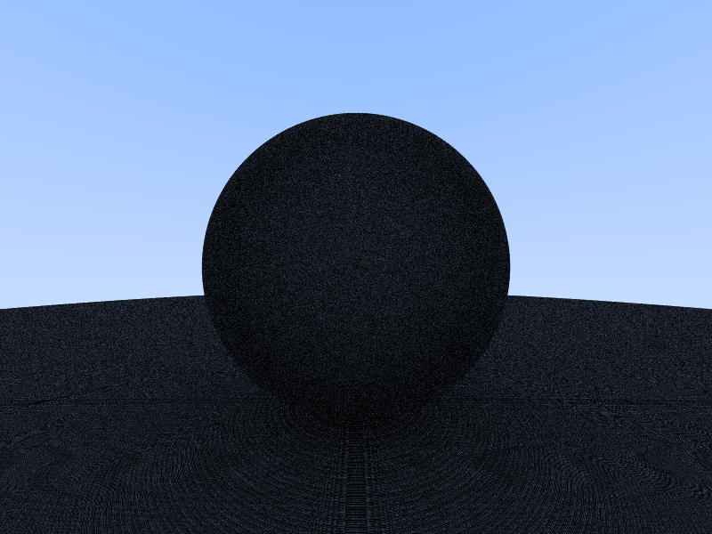
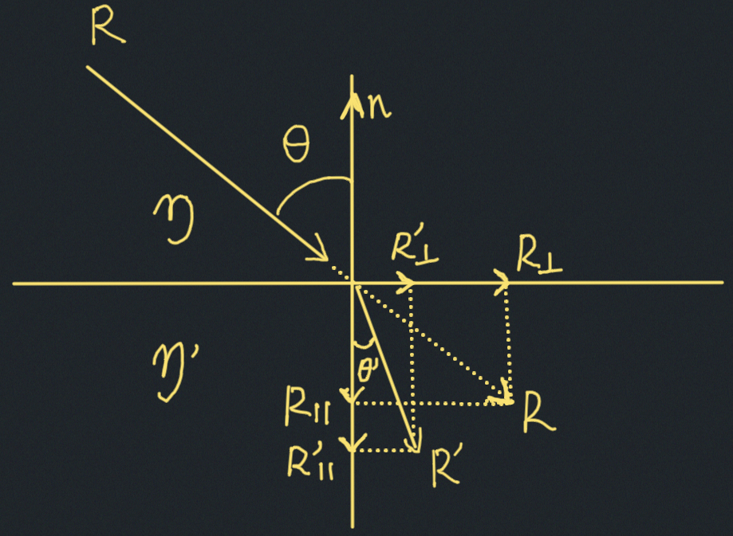

Strange Circular Banding
===============================================================================
[](images/strange-circular-banding.png)
The rendered image is also very dark.
```rust
let limits = 0.0..Fp::MAX;
let intersection = sphere.ray_intercept(ray, &limits);
```
Because I set the lower limit to 0, `ray_intercept()` would return hit when `t` is 0. This causes
a sphere to intersect with a ray bounced from the sphere itself. This would lead to infinite
loop of successful intersection test on the sphere and its bounced ray, if the trace depth is not
capped. Because the trace depth is capped, the trace would eventually return zero, abandoning the
contribution of the original ray. That's why the rendered image is dark. I'm not exactly sure why
the circular banding, which is also fixed by setting the lower limits to a positive non-zero
value.
Snell's Law
===============================================================================
[](images/snell-law.jpg)
To calculate refracted ray $R^\prime = R^\prime_\perp + R^\prime_\parallel$:
$$
R_\parallel = (R \cdot n)n \\
R_\perp = R - R_\parallel \\
R_\perp^\prime = sin\theta^\prime |R^\prime|\dfrac{R_\perp}{|R_\perp|} \\
\because |R^\prime| = |R| \\
R^\prime_\perp = \dfrac{sin\theta^\prime |R^|}{|R_\perp|} R_\perp \\
R^\prime_\perp = \dfrac{sin\theta^\prime}{sin\theta} R_\perp \\
R^\prime_\perp = \dfrac{\eta}{\eta^\prime} (R - (R \cdot n)n) \\
\because |R^\prime_\parallel|^2 = |R^\prime|^2 - |R^\prime_\perp|^2 \land |R^\prime| = |R| \\
R^\prime_\parallel = \sqrt{|R|^2 - |R^\prime_\perp|^2} (-n)
$$
## Black Spot at the Bottom of Dielectric Sphere
[](images/dieletric-bottom-black-spot.png)
```rust
let limits = 0.0078125..Fp::MAX;
let intersection = sphere.ray_intercept(ray, &limits);
```
The lower limit for finding the intersection solution `t` is too big, causing many rays
to be abandoned.
```rust
let limits = 0.0001..Fp::MAX;
let intersection = sphere.ray_intercept(ray, &limits);
```
[](images/dieletric-bottom-black-spot-fixed.png)
## How does ray tracing work with refraction?
When tracing a ray from viewing plane to a glass object, the ray hitting the glass object is actually the
refracted ray in real life, and the refracted ray that we calcuate is the incident ray in real life.
According to the reversibility principle of light, this is fine.
Why does stratifying the samples help mitigate the curse of dimensionality problem in Monte Carlo algorithm?
===============================================================================
Why finding half sum, instead of half area, works for finding halfway point?
===============================================================================
In the section 3.5 of the third book, to find the halfway point h where values [0, h) and [h, 2pi) have the same
probability of 50%, the author uses the following code:
```cpp
// Sort the samples by x.
std::sort(std::begin(samples), std::end(samples), compare_by_x);
// Find out the sample at which we have half of our area.
double half_sum = sum / 2.0;
double halfway_point = 0.0;
double accum = 0.0;
for (unsigned int i = 0; i < N; i++) {
accum += samples[i].p_x;
if (accum >= half_sum) {
halfway_point = samples[i].x;
break;
}
}
```
Notice, `accum` accumulates `p_x` which is the result of pdf(x), which is NOT the area. Originally I thought
code `accum` should accumulates the area as below:
```cpp
double half_area = ((2*pi / N) * sum) / 2.0;// re-arranged from (2*pi * sum / N) / 2.0
for (unsigned int i = 0; i < N; i++) {
double accum = 0.0;
for (unsigned int j = 0; j < (i + 1): j++) {
accum += samples[j].p_x;
}
double partial_area = (x / (i + 1)) * accum; // re-arranged from (x - 0.0) * accum / (i + 1)
if (partial_area >= half_area) {
halfway_point = samples[i].x;
break
}
}
```
The result from the second code snippet is the same as the one from the first.
The reason the first code works is because the samples generated are uniformly distributed. This means that
the samples can be considered equally spaced over [0.0, 2pi]. In other words, `x / (i + 1)` in the second
code snippet equals `2*pi / N`, which is a constant and can be cancelled out.
Approximating Distributions
===============================================================================
## Intuition on mapping from a uniform distribution to another distribution defined by a PDF.
Say we have 100 monotonically increasing numbers uniformly distributed in [0, 1]: $x_0, x_1, ...,
x_{99}$. In our case, this basically means that these numbers are more or less 0.01, 0.02, ..., 1.0.
Now say we find a mapping that maps $x_i$ to $y_i$ over [a, b] where $y_i$ is also _monotonically
increasing_ and its distribution is defined by the pdf(y). Given pdf(y), we know its cdf(y). By
definition, this means that the probability of numbers in [a, $y_0$] is $cdf(y_0)$. Empirically,
we know that the probability of numbers in [a, $y_0$] is 1/100 (because $y_i$ is monotonically
increasing). Similarly, the theoretical probability of numbers in [a, $y_1$] is $cdf(y_1)$, and
the empirical probability is 2/100 (because $(y_0, y_1) \leq y_1$).
Notice, 1/100, 2/100 are exactly $x_0$ and $x_1$. So $cdf(y_0) = x_0 \to cdf^{-1}(x_0) = y_0$,
$cdf(y_1) = x_1 \to cdf^{-1}(x_1) = y_1$.
__Does $cdf^{-1}(x_1=0.02) = y_1$ actually hold?__
This question is non-sensical, because when we try to map a uniform distribution to another distribution,
we use $cdf^{-1}$ to get the result. So whatever $y_1$ is, we get it from computing $cdf^{-1}(x_1)$.
The intuition is that the values of the probabilities of the [a, $y_0$], [a, $y_1$], ..., [a, $y_99$]
are uniformly distributed: 1/100, 2/100, ... 100/100. We can map the uniformly distributed values back
to get $y_0$, $y_1$, ...
__What if $x_i$ are all in [0.5, 1]?__
Then using $cdf^{-1}(x)$ to calculate $y_i$ will not result in the distribution defined by pdf(y).
## The quote below is from the section 3.6 in the third book:
> If $f(d)$ monotonically increases, then we would expect $f(0.25)=1.0$ and $f(0.5)=\sqrt{2}$.
Note, d is a uniform random generator. In other words, if we call $f(d)$ 100 times, we should more or less
get $f(0.01)$, $f(0.02)$, $f(0.03)$, $f(0.04)$ ... And because the PDF specified above this quote, we should
expect that 25 calls of these 100 would result in values smaller than (or equal to) 1.0. Because $f(d)$
monotonically increases, if $f(0.25)=1.1$, then it's possible that $f(0.24)=1.05$. But this would result in
fewer than 25 values smaller than 1. By the same logic, $f(0.25)\ne 0.9$.